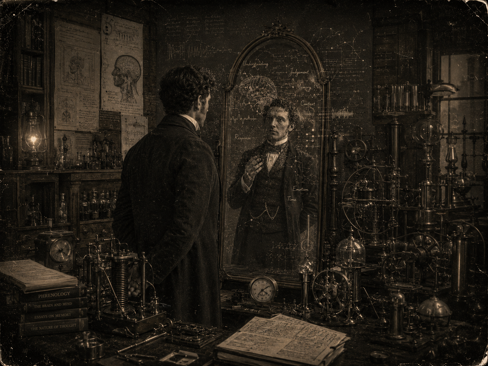

01 / Research
研究兴趣
我关注时序大数据与区块链研究的交叉方向。时序数据记录着系统、市场和现实世界随时间变化的细节，而区块链提供了可信、透明、可追溯的数据组织方式。我希望探索如何在大规模时序数据中发现规律、建立预测模型，并结合区块链技术提升数据流转、验证与协作的可靠性。
我也对人脑、对话反应与计算机之间的联系感兴趣。人在交流中的理解、判断和回应往往不是孤立发生的，而是与记忆、语境、情绪和时间节奏共同作用。我希望进一步理解这些认知过程如何被计算机模型描述、模拟与辅助，从而探索更自然的人机交互方式。
02 / Practice
实践
我希望在实践中把抽象的认知问题转化为可以观察、记录和分析的数据。人脑传递出的信号像一面明镜，映照出人在对话中的注意、反应、判断与情绪变化；而计算机则提供了另一种观看方式，将这些连续而细微的变化整理成结构、模型和可被反复验证的线索。对我来说，实践不是简单地使用工具，而是在人的思考与机器的计算之间寻找一种更清晰、更自然的连接。

03 / Contact